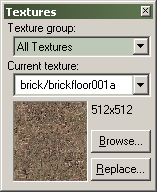
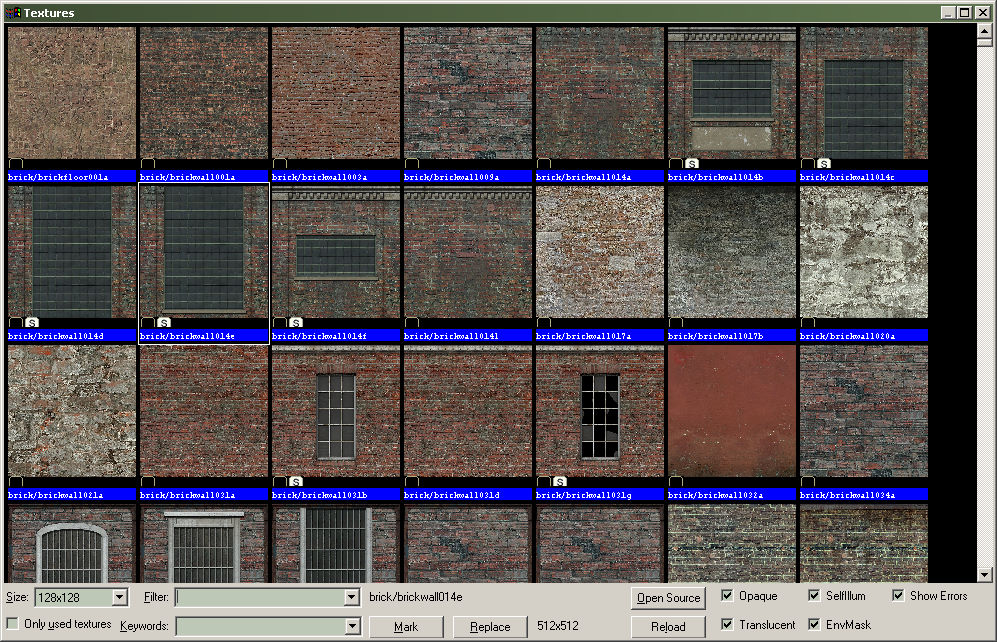

Applying Materials to Solids
Materials, or textures, are the designs applied to the surfaces of solids (brushes). These materials show what a given solid is made of (brick, steel, sand, etc.). So, while solid brushes give your level form, materials indicate function, create atmosphere and bring your level to life. Skilled application of materials is one of the most important aspects of creating a good level. The tools in the Hammer Editor give you easy access material with various visual properties.
The materials for the Source Engine are stored in directories within the game directory, separated by logical categories. A material is a text file with the extension .VMT that describes how the texture is rendered in the engine. VMT files point to the separate texture files that make up the look of the material. Individual texture files can be used for color, specularity, transparency, etc. Together, they make up the combined look of the material.
Your first encounter with materials will most likely be through the Textures toolbar.
The Textures toolbar shows the current materials, and lets you select a new material. The Current texture drop-down list shows the last eight materials used, then continues with a list of the remaining materials.
The Browse... button opens the Texture Browser, where you can select from all available textures.
This window contains a list of the materials currently available. Double-clicking a material in the list selects it as the current material and close the Texture Browser. The material you selected will now appear in the Textures toolbar.
So to apply a material to an object:
- Click Browse... on the Textures toolbar.
- In the Texture Browser, find a material you wish to apply, and double-click it.
- Select a brush you wish to appy the material to with the Selection Tool on the Map Tools toolbar.
- Click the Apply Current Texture button on the Map Tools toolbar.
See the Textures toolbar and Texture Browser for more detailed information on their functions.
Texture Application Mode
You will eventually need to modify a texture in some way, like to rotate or scale it. The Face Edit dialog (Texture Application mode) allows you to manipulate the texture properties of selected brush faces. Texture Application mode is entered by clicking its icon on the Map Tools toolbar, or by pressing SHIFT+A. To select a brush face, click on it in the 3D view with the left mouse button. To select multiple faces, hold down the Ctrl key while you do this. You can also select multiple brushes before selecting the Texture Application tool.
See Face Edit for more information on all the capabilties of the Material tab.
© 2004 Valve Corporation. All rights reserved. Valve, the Valve logo, Half-Life, the Half-Life logo, the Lambda logo, Steam, the Steam logo, Team Fortress, the Team Fortress logo, Opposing Force, Day of Defeat, the Day of Defeat logo, Counter-Strike, the Counter-Strike logo, Source, the Source logo, Hammer and Counter-Strike: Condition Zero are trademarks and/or registered trademarks of Valve Corporation. Microsoft and Visual Studio are trademarks and/or registered trademarks of Microsoft Corporation. All other trademarks are property of their respective owners.